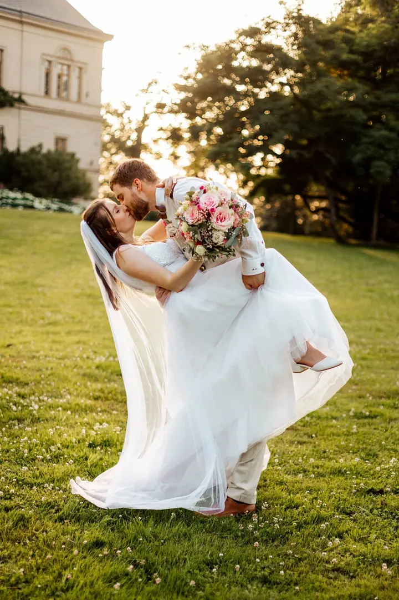
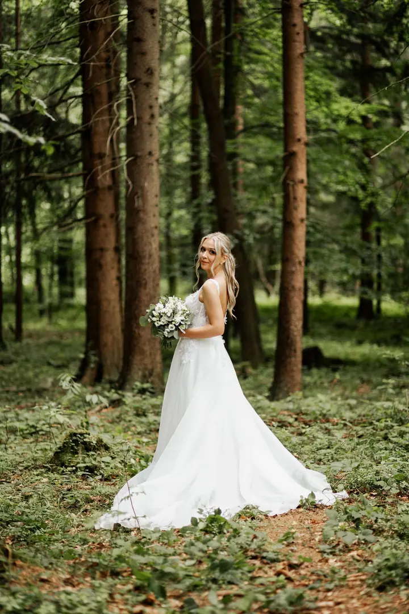
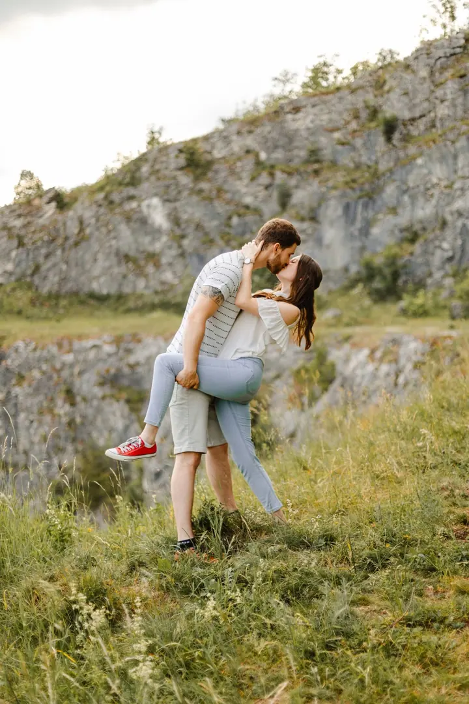
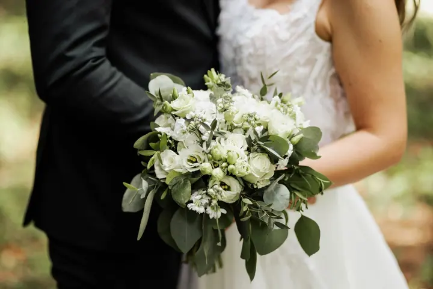

jedna
Svatby
Fotím všechny důležité momenty a emoce vašeho svatebního dne, a to bez zbytečného strojení. Dostanete autentické fotografie, které váš den vyprávějí.

Svatební a rodinná fotografka · Ostrava, okolí Ostravy, kamkoli po domluvě

Jmenuji se Klára Čadová a jsem rodinná a svatební fotografka z Ostravy. Fotím svatby, zamilované páry i celé rodiny s mazlíčky. A ať jste odkudkoliv, ráda za vámi přijedu.
Více o mně
Co fotím
jedna
Fotím všechny důležité momenty a emoce vašeho svatebního dne, a to bez zbytečného strojení. Dostanete autentické fotografie, které váš den vyprávějí.
dvě
Ať jste dva, nebo celá rodina i s mazlíčky, na fotky se vejdete opravdu všichni. Vzniknou snímky, které si rádi pověsíte na zeď nebo dáte do rámečku k posteli.
tři
Fotím oslavy a dětské narozeniny tak, jak opravdu proběhly, i s dortem, maskoty a radostí hostů.
Portréty fotím venku v přirozeném světle i v ateliéru, kde je klid a světlo mám pod kontrolou. Ráda se pustím i do něčeho experimentálnějšího.
Opravdové okamžiky vznikají, když se cítíte příjemně a uvolněně

Za objektivem
Jsem fotografka z Ostravy a nejraději fotím chvíle plné emocí, radosti a přirozenosti. Nejčastěji mě potkáte v Ostravě a okolí, ale ráda přijedu kamkoli, kde chcete vytvořit své vzpomínky.
Fotím hlavně rodiny, páry, svatby a portréty. Mám ráda rozmanitost, a tak fotím venku v přírodě s přirozeným světlem i v ateliéru, kde je klid a všechno mám pod kontrolou. Jsem otevřená i novým nápadům a experimentům.
Nejdůležitější pro mě je, abyste se u focení cítili příjemně a uvolnění. Jen tak spolu zachytíme opravdové okamžiky a vzniknou přirozené fotografie plné emocí a příběhů, na které se budete rádi dívat ještě dlouho.
Klára
Napište mi přes formulář, o jaké focení máte zájem. Obratem se vám ozvu a domluvíme se na detailech.
Probereme termín, místo a vaše představy. Můžeme fotit venku v přírodě i v ateliéru, přirozeně nebo experimentálněji.
U focení nespěcháme. Pomůžu vám se uvolnit, abychom zachytili opravdové okamžiky a ne strojené pózy.
Fotky pečlivě vyberu a upravím a pošlu vám hotovou galerii, ke které se můžete kdykoli vracet.
Portfolio
Otázky
Nejčastěji v Ostravě a jejím okolí. Ať jste ale odkudkoliv, ráda za vámi přijedu.
Svatební focení začíná od 5 500 Kč. Přesnou cenu vám ráda spočítám podle toho, jak dlouho a co všechno budeme fotit.
Určitě. Ať jste dva, nebo celá rodina i s mazlíčky, na fotky se vejdete všichni.
Vůbec ne. Hlavně mi jde o to, abyste se cítili příjemně a uvolněně. S tím vám ráda pomůžu, nic nehrajeme a nestrojíme.